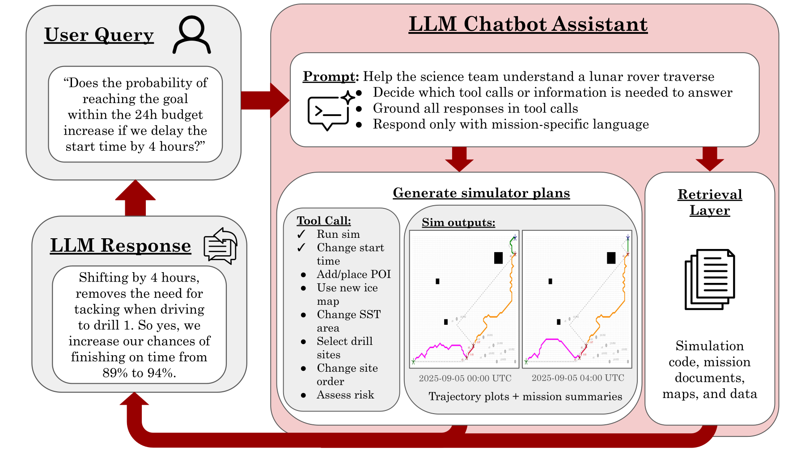
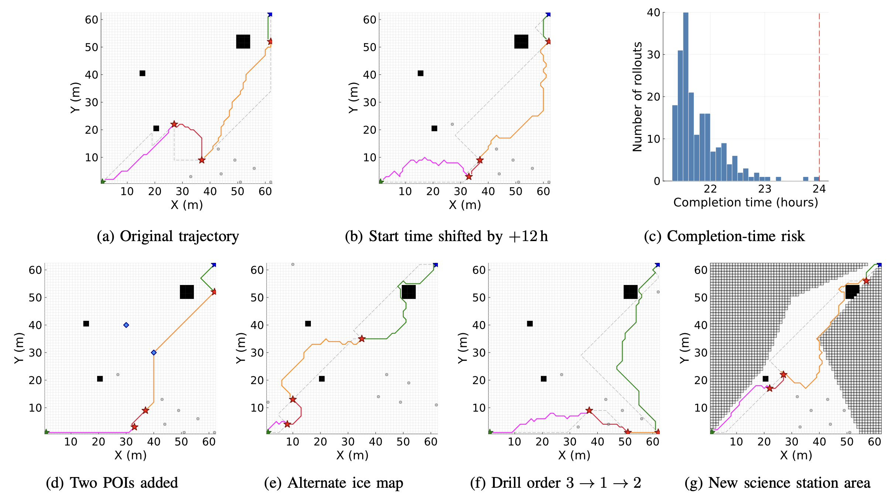

Large Language Model Explainability for Planning Lunar Rover Trajectories under Uncertainty
Michelle Ho1,
Maximilian Adang1, Zachary Booth2,
David E. Astle2, Margaret Hansen4,
Edward Balaban3, and Mykel J. Kochenderfer1
1Stanford University 2KBR Inc.
3NASA Ames Research Center 4Carnegie Mellon University
📌 ISPaRo 2026

End-to-end flow of our LLM-based mission planning assistant on an example query.
Abstract
Planning planetary rover trajectories under probabilistic uncertainty is a multi-objective
optimization problem that science teams currently iteratively solve and verify by hand. This process becomes
impractical when timelines and constraints frequently shift throughout the mission planning phase.
Sampling-based planners such as Monte Carlo Tree Search can speed up this process, but their outputs do not
preserve traceability to the science objectives that justify each plan, which the science team needs to
verify. We propose an interactive assistant based on a large language model (LLM) that can explain planner
trajectories using domain vocabulary and re-run the planner under user-specified conditions to compare
alternatives. Our framework pairs a simulator inspired by the NASA Volatiles Investigating Polar Exploration
Rover (VIPER) mission with a ReAct queryable interface that calls curated action tools and retrieval
functions. Experiments show that 90.9% of the assistant's responses are faithful to the planner's outputs, a
nearly 65% improvement over zero-shot prompting of the same LLM without tool access, demonstrating the
potential for trustworthy explainability of uncertainty-aware traverses with an LLM-based system.
Approach
We formulate our VIPER-inspired trajectory planning problem within a science station as a
sequential decision-making problem, and develop an MCTS-based planner that uses a simulator grounded in
mission requirements and constraints. We then develop an LLM-based framework for providing accurate
explanations of the planning results with a retrieval layer and tool catalog for a ReAct module. The LLM
assistant does not modify the underlying MDP or override the planner. It can only run the planner on behalf of
the user with their specified conditions or explain the results, without telling the user what they should do.
Experiments
We construct a query bank of 115 science team questions consisting of plan comparisons,
feasibility, mission-document and source code lookup, and ambiguous or edge cases. The full assistant's 90.9%
faithfulness is a nearly 65% improvement over the 26.7% zero-shot baseline.

Planner behavior demonstrated on different scenarios. All panels share the same
MDP formulation, number of drill sites selected from 10 candidates, and MCTS hyperparameters. They use the
same legend from Figure 2 with blue diamonds as POIs. (a) The original plan takes 20.15 hours without
prospecting. (b) A +12 h shift in start time results in a new plan due to different SMGs. (c) 200 Monte
Carlo rollouts of (a) under SMG uncertainty, with 99.5% finishing in 24 hours. (d) We added 2 POIs,
finishing in 21.7 h. (e) We reran the planner with a new ice map. (f) Enforcing a non-optimal site ordering
increased the mission time to 24.45 hours, exceeding the limit. (g) We replanned under new science station
boundaries.
We present an LLM-based framework for explaining lunar rover trajectories planned under
uncertainty, with an MCTS planner accompanied by a VIPER-inspired simulator that includes probabilistic SMGs,
a 24-hour mission budget, and exploration vs. exploitation tradeoffs. The full framework with action tools and
retrieval outperforms the zero-shot baseline, with a 90.9% accuracy rate of responses outperforming zero-shot
by nearly 65%. Our work has several
opportunities for future improvement. We can extend the MDP to handle partial observability and incorporate
active uncertainty reduction during trajectory planning. Additionally, we would like to test other solvers and
use cases beyond MCTS and VIPER SST.